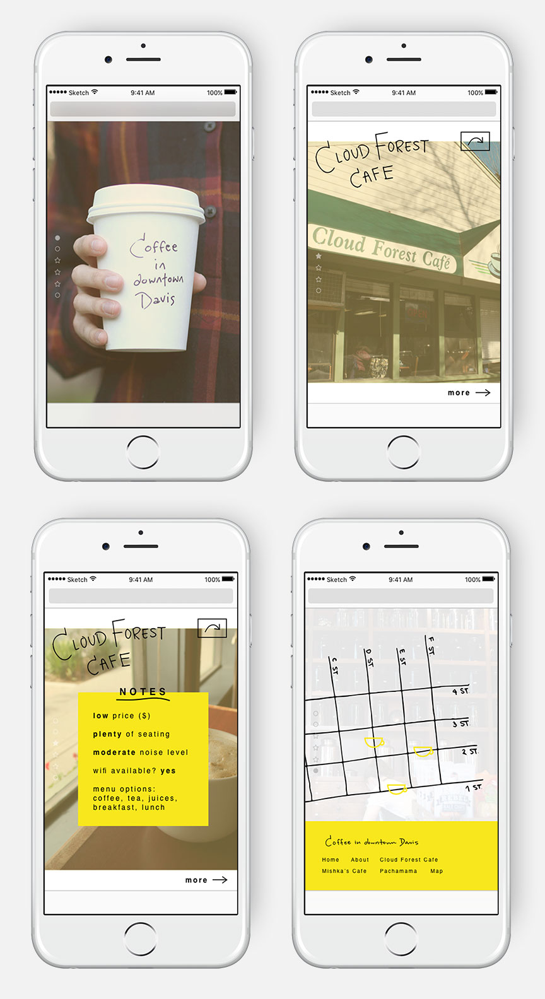
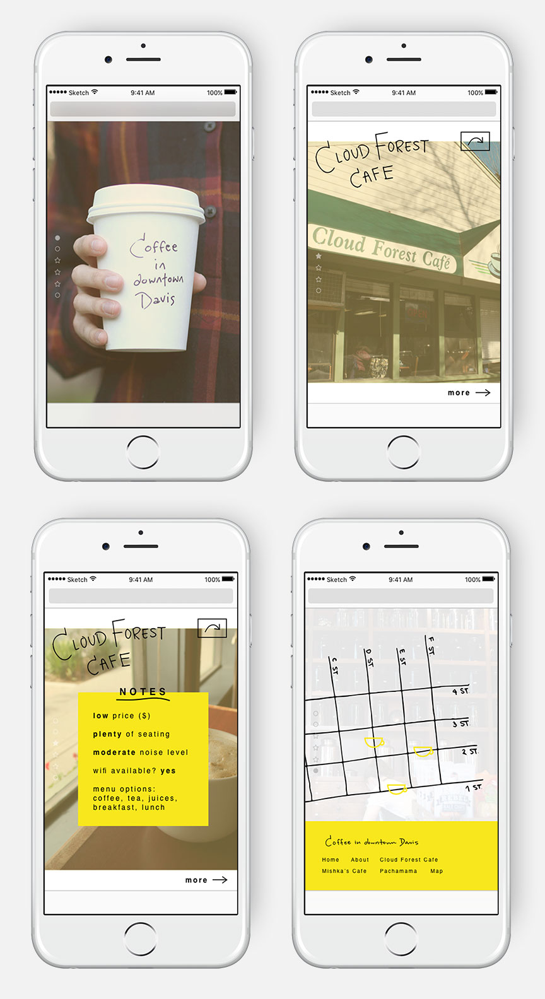
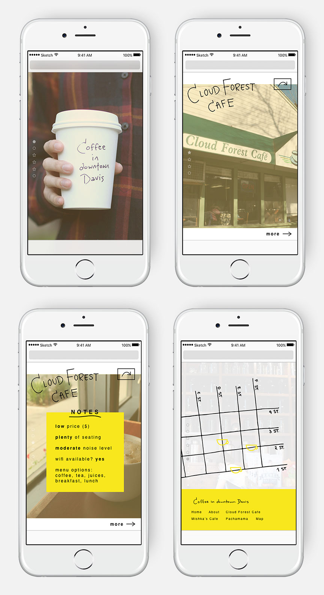

Coffee in Davis
responsive website
An informational website introducing the local cafe options in the city of Davis. Coffee in Davis utilizes minimal text and large images to help students find their new go-to study spot.
Preliminary Prototype


Final Prototype

Mobile Prototype

 
